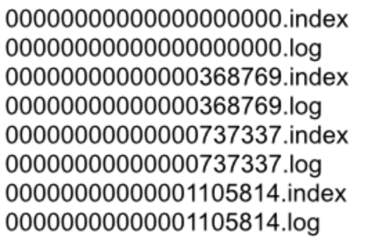
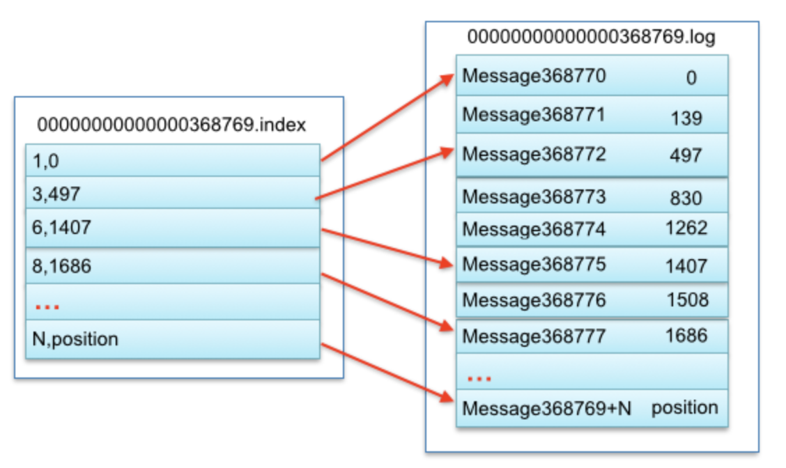
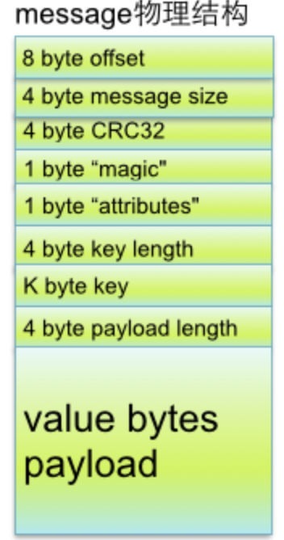

<!DOCTYPE html>
<html>
<head><meta name="generator" content="Hexo 3.8.0">
  <meta charset="utf-8">
  

  
  <title>Kafka design | Imoko</title>
  <meta name="viewport" content="width=device-width, initial-scale=1, maximum-scale=1">
  <meta name="description" content="Kafka官方文档翻译以及扩展 官方文档 中文版本：https://www.cnblogs.com/coprince/p/5893066.html 其他参考：https://colobu.com/2017/11/02/kafka-replication/ 4.1 Motivationfor handling all the real-time data feeds  high-throughput">
<meta property="og:type" content="article">
<meta property="og:title" content="Kafka design">
<meta property="og:url" content="http://yoursite.com/2018/10/30/Kafka_design/index.html">
<meta property="og:site_name" content="Imoko">
<meta property="og:description" content="Kafka官方文档翻译以及扩展 官方文档 中文版本：https://www.cnblogs.com/coprince/p/5893066.html 其他参考：https://colobu.com/2017/11/02/kafka-replication/ 4.1 Motivationfor handling all the real-time data feeds  high-throughput">
<meta property="og:locale" content="default">
<meta property="og:image" content="http://yoursite.com/2018/10/30/Kafka_design/image-20181105233252954.png">
<meta property="og:image" content="http://yoursite.com/2018/10/30/Kafka_design/image-20181105233332064.png">
<meta property="og:image" content="http://yoursite.com/2018/10/30/Kafka_design/image-20181105233407991.png">
<meta property="og:updated_time" content="2018-11-22T06:46:01.000Z">
<meta name="twitter:card" content="summary">
<meta name="twitter:title" content="Kafka design">
<meta name="twitter:description" content="Kafka官方文档翻译以及扩展 官方文档 中文版本：https://www.cnblogs.com/coprince/p/5893066.html 其他参考：https://colobu.com/2017/11/02/kafka-replication/ 4.1 Motivationfor handling all the real-time data feeds  high-throughput">
<meta name="twitter:image" content="http://yoursite.com/2018/10/30/Kafka_design/image-20181105233252954.png">
  
    <link rel="alternate" href="/atom.xml" title="Imoko" type="application/atom+xml">
  
  
    <link rel="icon" href="/favicon.png">
  
  
    <link href="//fonts.googleapis.com/css?family=Source+Code+Pro" rel="stylesheet" type="text/css">
  
  <link rel="stylesheet" href="/css/style.css">
</head>
</html>
<body>
  <div id="container">
    <div id="wrap">
      <header id="header">
  <div id="banner"></div>
  <div id="header-outer" class="outer">
    <div id="header-title" class="inner">
      <h1 id="logo-wrap">
        <a href="/" id="logo">Imoko</a>
      </h1>
      
    </div>
    <div id="header-inner" class="inner">
      <nav id="main-nav">
        <a id="main-nav-toggle" class="nav-icon"></a>
        
          <a class="main-nav-link" href="/">Home</a>
        
          <a class="main-nav-link" href="/archives">Archives</a>
        
      </nav>
      <nav id="sub-nav">
        
          <a id="nav-rss-link" class="nav-icon" href="/atom.xml" title="RSS Feed"></a>
        
        <a id="nav-search-btn" class="nav-icon" title="Search"></a>
      </nav>
      <div id="search-form-wrap">
        <form action="//google.com/search" method="get" accept-charset="UTF-8" class="search-form"><input type="search" name="q" class="search-form-input" placeholder="Search"><button type="submit" class="search-form-submit">&#xF002;</button><input type="hidden" name="sitesearch" value="http://yoursite.com"></form>
      </div>
    </div>
  </div>
</header>
      <div class="outer">
        <section id="main"><article id="post-Kafka_design" class="article article-type-post" itemscope="" itemprop="blogPost">
  <div class="article-meta">
    <a href="/2018/10/30/Kafka_design/" class="article-date">
  <time datetime="2018-10-29T16:00:00.000Z" itemprop="datePublished">2018-10-30</time>
</a>
    
  </div>
  <div class="article-inner">
    
    
      <header class="article-header">
        
  
    <h1 class="article-title" itemprop="name">
      Kafka design
    </h1>
  

      </header>
    
    <div class="article-entry" itemprop="articleBody">
      
        <p><code>Kafka官方文档翻译以及扩展</code></p>
<p><a href="https://kafka.apache.org/documentation.html#design" target="_blank" rel="noopener">官方文档</a></p>
<p>中文版本：<a href="https://www.cnblogs.com/coprince/p/5893066.html" target="_blank" rel="noopener">https://www.cnblogs.com/coprince/p/5893066.html</a></p>
<p>其他参考：<a href="https://colobu.com/2017/11/02/kafka-replication/" target="_blank" rel="noopener">https://colobu.com/2017/11/02/kafka-replication/</a></p>
<h3 id="4-1-Motivation"><a href="#4-1-Motivation" class="headerlink" title="4.1 Motivation"></a><a href="https://kafka.apache.org/documentation.html#majordesignelements" target="_blank" rel="noopener">4.1 Motivation</a></h3><p>for handling all the real-time data feeds</p>
<ul>
<li>high-throughput</li>
<li>large data backlogs  大量的数据积压</li>
<li>low-latency delivery 满足传统的队列的用法</li>
</ul>
<h3 id="4-2-Persistence"><a href="#4-2-Persistence" class="headerlink" title="4.2 Persistence"></a><a href="https://kafka.apache.org/documentation.html#persistence" target="_blank" rel="noopener">4.2 Persistence</a></h3><blockquote>
<p>As a result the performance of linear writes on a <a href="http://en.wikipedia.org/wiki/Non-RAID_drive_architectures" target="_blank" rel="noopener">JBOD</a> configuration with six 7200rpm SATA RAID-5 array is about 600MB/sec but the performance of random writes is only about 100k/sec—a difference of over 6000X.</p>
</blockquote>
<p>磁盘的顺序写和随机写，性能相差6000倍，<a href="http://deliveryimages.acm.org/10.1145/1570000/1563874/jacobs3.jpg" target="_blank" rel="noopener">sequential disk access can in some cases be faster than random memory access!</a></p>
<ul>
<li><p>OS pagecache</p>
<p>现代操作系统很乐于使用所有的空闲内存来做disk caching。所有的磁盘读写都会通过这些cache进行。</p>
</li>
<li><p>Furthermore, we are building on top of the JVM, and anyone who has spent any time with Java memory usage knows two things:</p>
<pre><code> The memory overhead of objects is very high, often doubling the size of the data stored (or worse).

Java garbage collection becomes increasingly fiddly and slow as the in-heap data increases.
</code></pre></li>
</ul>
<p>基于上面的两个原因， 得出的结论：</p>
<blockquote>
<p>using the filesystem and relying on pagecache is superior to maintaining an in-memory cache</p>
</blockquote>
<p>直接使用带pagecache的OS filesystem 甚至性能会比使用内存cache要更好。</p>
<p>This style of pagecache-centric design is described in an <a href="http://varnish-cache.org/wiki/ArchitectNotes" target="_blank" rel="noopener">article</a> on the design of Varnish</p>
<h3 id="partition存储细节："><a href="#partition存储细节：" class="headerlink" title="partition存储细节："></a>partition存储细节：</h3><p>broker的机器上，xxx/message-folder为数据文件存储根目录，在这个目录下， 每个partition一个文件夹。</p>
<p>在partition的文件夹下，有多个segment：</p>
<ul>
<li>segment file组成：由2大部分组成，分别为index file和data file，此2个文件一一对应，成对出现，后缀”.index”和“.log”分别表示为segment索引文件、数据文件.</li>
<li>segment文件命名规则：partion全局的第一个segment从0开始，后续每个segment文件名为上一个segment文件最后一条消息的offset值。数值最大为64位long大小，19位数字字符长度，没有数字用0填充。</li>
</ul>
<p></p>
<p></p>
<p>segment data file由许多message组成，每个message物理结构如下：</p>
<p></p>
<h3 id="4-3-Efficiency"><a href="#4-3-Efficiency" class="headerlink" title="4.3 Efficiency"></a><a href="https://kafka.apache.org/documentation.html#maximizingefficiency" target="_blank" rel="noopener">4.3 Efficiency</a></h3><p>For more background on the sendfile and zero-copy support in Java, see this <a href="http://www.ibm.com/developerworks/linux/library/j-zerocopy" target="_blank" rel="noopener">article</a>. </p>
<h3 id="4-4-The-Producer"><a href="#4-4-The-Producer" class="headerlink" title="4.4 The Producer"></a><a href="https://kafka.apache.org/documentation.html#theproducer" target="_blank" rel="noopener">4.4 The Producer</a></h3><p>任意一个broker都保存着metadate，关于哪些节点是活着的，还有一个topic的partition的leader是谁？所以producer可以找到对应的leader，直接向其发送消息。</p>
<h3 id="4-5-The-Consumer"><a href="#4-5-The-Consumer" class="headerlink" title="4.5 The Consumer"></a><a href="https://kafka.apache.org/documentation.html#theconsumer" target="_blank" rel="noopener">4.5 The Consumer</a></h3><p>consumer执行‘fetch’操作，同时带着offset，来向leader拉去消息。</p>
<p>offset：</p>
<p>一般的队列都会在broker端记录consumer消费的位置，这样做可以及时的删除消费掉的消息，但是维护这个位置是很费事的，还需要consumer返回ack。</p>
<p>kafka也会记录一个offset，表示下一个可以消费的消息的位置，而且可以‘倒带’，即重现消费之前消费过的消息。</p>
<h3 id="4-6-Message-Delivery-Semantics"><a href="#4-6-Message-Delivery-Semantics" class="headerlink" title="4.6 Message Delivery Semantics"></a><a href="https://kafka.apache.org/documentation.html#semantics" target="_blank" rel="noopener">4.6 Message Delivery Semantics</a></h3><h3 id="4-7-Replication"><a href="#4-7-Replication" class="headerlink" title="4.7 Replication"></a><a href="https://kafka.apache.org/documentation.html#replication" target="_blank" rel="noopener">4.7 Replication</a></h3><ul>
<li><p>The unit of replication is the topic partition</p>
<p>relication的最小单位是topic的partition。</p>
</li>
<li><p>支持automatic faiover</p>
<p>TODO 怎么支持的</p>
</li>
<li><p>不像其他队列，replication的作用就只有做副本，无副作用。例如不会提供读。</p>
</li>
<li><p>followers从leader消费数据，就好像是一个kafka的consumer一样。</p>
</li>
<li><p>节点存活的定义</p>
<p>1 A node must be able to maintain its session with ZooKeeper </p>
<p>2 If it is a slave it must replicate the writes happening on the leader and not fall “too far” behind</p>
</li>
<li><p>leader 维护ISR （in sync replication）</p>
<p>如果一个follower挂了，阻塞了或者落后了，leader会把他从ISR中删除。</p>
</li>
<li><p>kafka不解决拜占庭问题。</p>
</li>
</ul>
<h3 id="commit"><a href="#commit" class="headerlink" title="commit"></a>commit</h3><p>定义：</p>
<p>所有的ISR的节点都提交了log之后，才说一个message被committed。只有committed message才会提供给consumer。</p>
<p>对于consumer来说：</p>
<p>consumer不会担心看到过的message 会因为leader切换而丢失。</p>
<p>对于producer：</p>
<p>可以选择是否要等待message被committed，是latency 和 durability之间的tradeoff。</p>
<blockquote>
<p>The guarantee that Kafka offers is that a committed message will not be lost, as long as there is at least one in sync replica alive, at all times. </p>
</blockquote>
<p>只要有一个ISR存活，就可以保障committed message 不会丢失。</p>
<blockquote>
<p>Kafka will remain available in the presence of node failures after a short fail-over period, but may not remain available in the presence of network partitions. </p>
</blockquote>
<p>kafka在节点短期失效的情况下可以保持可用，但是在存在网络分区的情况下，是不可用的。</p>
<p>TODO：怎么理解</p>
<h2 id="Quorum-algorithms（-majority-vote"><a href="#Quorum-algorithms（-majority-vote" class="headerlink" title="Quorum algorithms（ majority vote)"></a>Quorum algorithms（ majority vote)</h2><p>简单来说，一半以上的follower commit了才能保障选举出来的leader有最新的commit。</p>
<p>好处：latency只依赖于最快的node。因为只要有一半ack了，就是commit成功，最快的最先完成。</p>
<p>坏处：写的增多，整体吞吐量下降，使得他不适合于大量的写的情况。举个例子：如果为了可以容忍2个节点的实效，就必须要5份数据的copy。 这个坏处也就可以解释为什么 quorum算法被经常用于类似zk这样的配置共享集群，而很少用于data storage。</p>
<p>kafka没有使用quorum算法。</p>
<blockquote>
<p>Instead of majority vote, Kafka dynamically maintains a set of in-sync replicas (ISR) that are caught-up to the leader. </p>
</blockquote>
<p>作为替代，kafka维护了一个ISR，其中每个replication都和leader保持一致。这个ISR是被leader维护的，且会保存到zk上。</p>
<p>只有ISR的成员，才会是leader的候选人。</p>
<blockquote>
<p>This ISR set is persisted to ZooKeeper whenever it changes. </p>
</blockquote>
<p>这个IRS集合是被持久化到zk。</p>
<blockquote>
<p>Another important design distinction is that Kafka does not require that crashed nodes recover with all their data intact</p>
</blockquote>
<p>另外一个kafka的特点是，crashed的nodes恢复后，不用恢复所有的数据。</p>
<h2 id="Unclean-leader-election"><a href="#Unclean-leader-election" class="headerlink" title="Unclean leader election"></a>Unclean leader election</h2><p>如果所有的ISR都挂了，怎么办？</p>
<ol>
<li>Wait for a replica in the ISR to come back to life and choose this replica as the leader (hopefully it still has all its data).</li>
<li>Choose the first replica (not necessarily in the ISR) that comes back to life as the leader.</li>
</ol>
<h2 id="Replica-Management"><a href="#Replica-Management" class="headerlink" title="Replica Management"></a>Replica Management</h2><blockquote>
<p>We attempt to balance partitions within a cluster in a round-robin fashion to avoid clustering all partitions for high-volume topics on a small number of nodes</p>
</blockquote>
<p>平衡的将partition分布到不同的broker中，用round-robin的方式。</p>
<blockquote>
<p>we elect one of the brokers as the “controller”. This controller detects failures at the broker level and is responsible for changing the leader of all affected partitions in a failed broker. If the controller fails, one of the surviving brokers will become the new controller.</p>
</blockquote>
<p>为每个partition进行leader选举是非常低效的，因为部署单元是broker，所以选一个borker当controller，它会去在broker层面去检测失效，并且还会去负责为失效的broker中受影响的partitions去做leader选举。如果controller broker挂了，就会选出一个新的。</p>
<p>实际上，Kafka选举一个broker作为controller，这个controller通过 watch Zookeeper检测所有的broker failure，并负责为所有受影响的parition选举leader，再将相应的leader调整命令发送至受影响的broker。如果 controller失败了，幸存的所有broker都会尝试在Zookeeper中创建/controller-&gt;{this broker id}，如果创建成功（只可能有一个创建成功），则该broker会成为controller，若创建不成功，则该broker会等待新 controller的命令。</p>

      
    </div>
    <footer class="article-footer">
      <a data-url="http://yoursite.com/2018/10/30/Kafka_design/" data-id="cjpbgxpxd000sy8fyokldfu0k" class="article-share-link">Share</a>
      
      
    </footer>
  </div>
  
    
<nav id="article-nav">
  
    <a href="/2018/10/30/BFS_and_DFS/" id="article-nav-newer" class="article-nav-link-wrap">
      <strong class="article-nav-caption">Newer</strong>
      <div class="article-nav-title">
        
          BFS and DFS
        
      </div>
    </a>
  
  
    <a href="/2018/08/14/Black_Red_tree/" id="article-nav-older" class="article-nav-link-wrap">
      <strong class="article-nav-caption">Older</strong>
      <div class="article-nav-title">Red Black Tree</div>
    </a>
  
</nav>

  
</article>

</section>
        
          <aside id="sidebar">
  
    
  <div class="widget-wrap">
    <h3 class="widget-title">Categories</h3>
    <div class="widget">
      <ul class="category-list"><li class="category-list-item"><a class="category-list-link" href="/categories/JVM/">JVM</a></li></ul>
    </div>
  </div>


  
    
  <div class="widget-wrap">
    <h3 class="widget-title">Tags</h3>
    <div class="widget">
      <ul class="tag-list"><li class="tag-list-item"><a class="tag-list-link" href="/tags/GC/">GC</a></li><li class="tag-list-item"><a class="tag-list-link" href="/tags/JVM/">JVM</a></li></ul>
    </div>
  </div>


  
    
  <div class="widget-wrap">
    <h3 class="widget-title">Tag Cloud</h3>
    <div class="widget tagcloud">
      <a href="/tags/GC/" style="font-size: 20px;">GC</a> <a href="/tags/JVM/" style="font-size: 10px;">JVM</a>
    </div>
  </div>

  
    
  <div class="widget-wrap">
    <h3 class="widget-title">Archives</h3>
    <div class="widget">
      <ul class="archive-list"><li class="archive-list-item"><a class="archive-list-link" href="/archives/2018/12/">December 2018</a></li><li class="archive-list-item"><a class="archive-list-link" href="/archives/2018/11/">November 2018</a></li><li class="archive-list-item"><a class="archive-list-link" href="/archives/2018/10/">October 2018</a></li><li class="archive-list-item"><a class="archive-list-link" href="/archives/2018/08/">August 2018</a></li><li class="archive-list-item"><a class="archive-list-link" href="/archives/2018/07/">July 2018</a></li><li class="archive-list-item"><a class="archive-list-link" href="/archives/2018/05/">May 2018</a></li><li class="archive-list-item"><a class="archive-list-link" href="/archives/2018/04/">April 2018</a></li></ul>
    </div>
  </div>


  
    
  <div class="widget-wrap">
    <h3 class="widget-title">Recent Posts</h3>
    <div class="widget">
      <ul>
        
          <li>
            <a href="/2018/12/04/hotspot_jvm_GC_CMS/">hotspot_jvm_GC_CMS</a>
          </li>
        
          <li>
            <a href="/2018/11/22/GC_overview/">GC_overview</a>
          </li>
        
          <li>
            <a href="/2018/11/22/Java_synchronizer/">JVM Synchronizer</a>
          </li>
        
          <li>
            <a href="/2018/11/22/BTreeStruct/">B-tree数据结构</a>
          </li>
        
          <li>
            <a href="/2018/11/22/DBs_mysql_locks/">Mysql Locks</a>
          </li>
        
      </ul>
    </div>
  </div>

  
</aside>
        
      </div>
      <footer id="footer">
  
  <div class="outer">
    <div id="footer-info" class="inner">
      &copy; 2018 Tao<br>
      Powered by <a href="http://hexo.io/" target="_blank">Hexo</a>
    </div>
  </div>
</footer>
    </div>
    <nav id="mobile-nav">
  
    <a href="/" class="mobile-nav-link">Home</a>
  
    <a href="/archives" class="mobile-nav-link">Archives</a>
  
</nav>
    

<script src="//ajax.googleapis.com/ajax/libs/jquery/2.0.3/jquery.min.js"></script>


  <link rel="stylesheet" href="/fancybox/jquery.fancybox.css">
  <script src="/fancybox/jquery.fancybox.pack.js"></script>


<script src="/js/script.js"></script>


  </div>
</body>
</html>